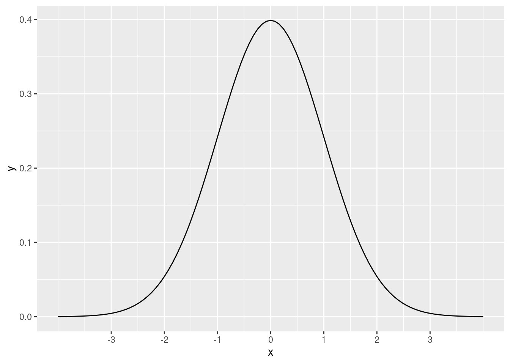
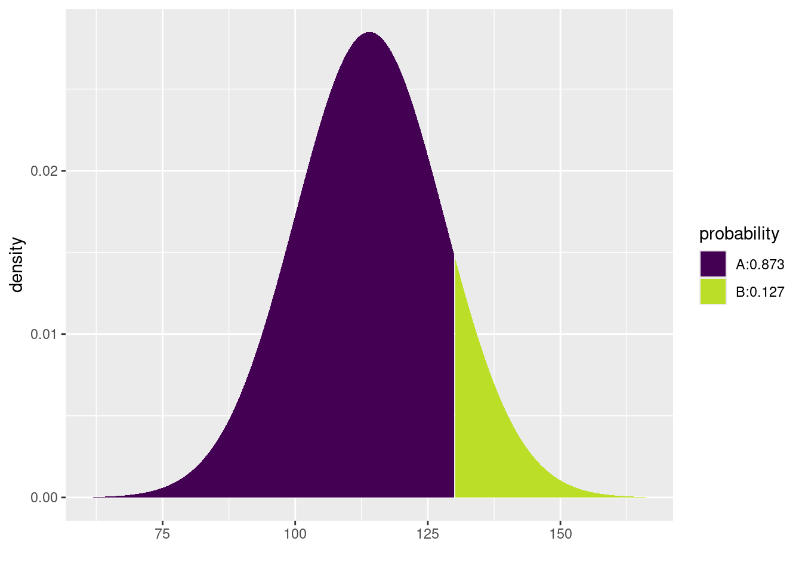
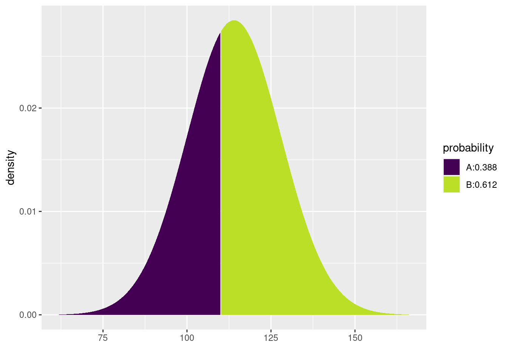
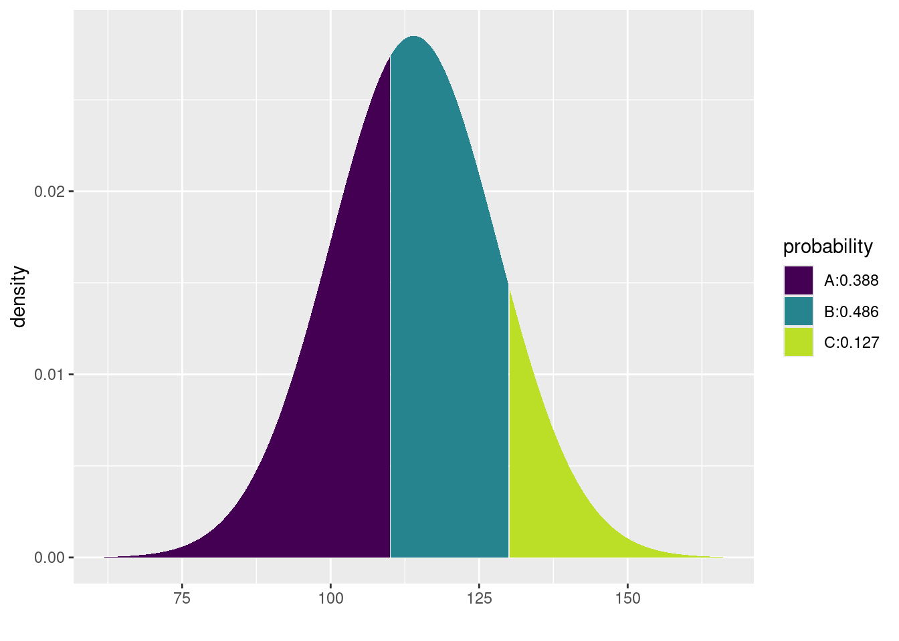
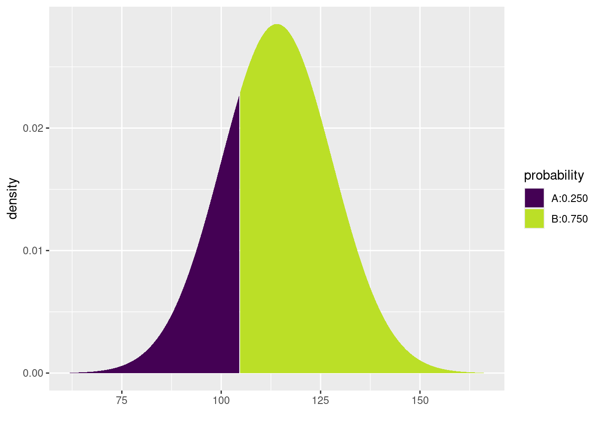
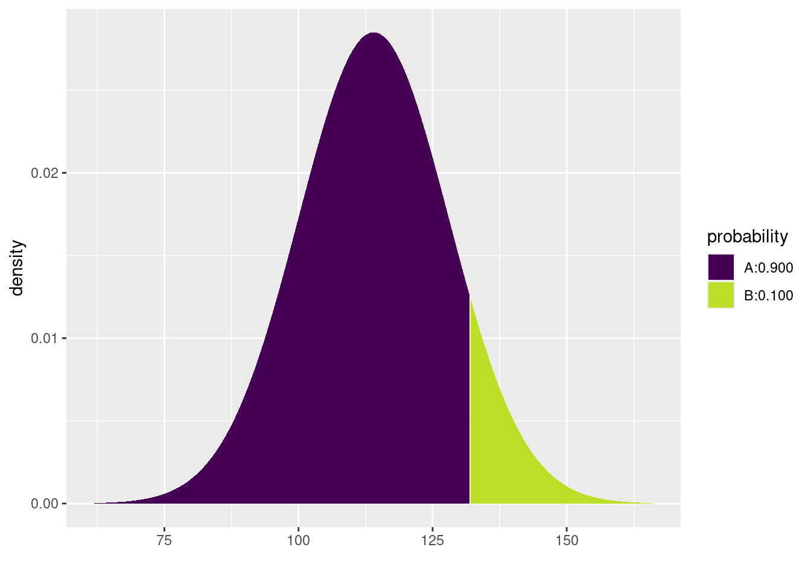
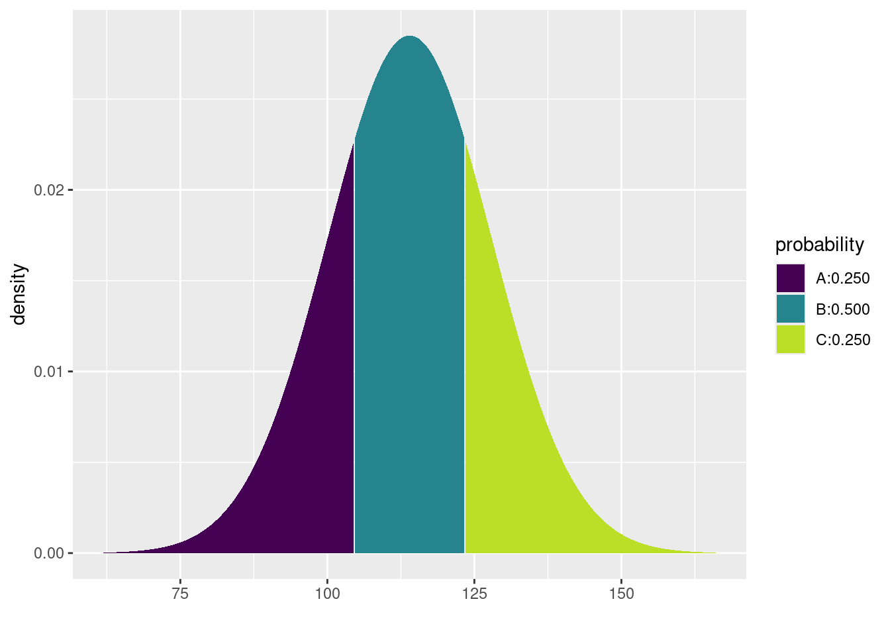
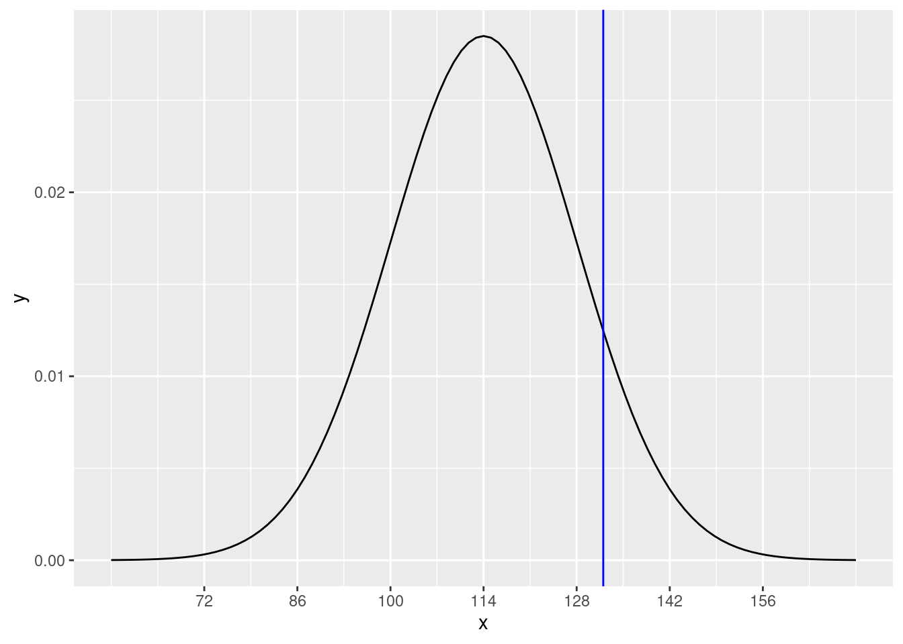
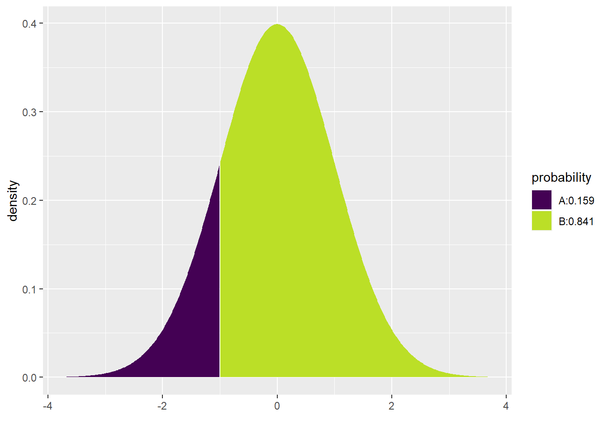

In this chapter we will learn how to work with normal models. In addition to learning about theoretical normal distributions, we will also develop QQ plots to assess the normality of data.
13.1.1 Install new packages
There are no new packages used in this chapter.
13.1.2 Download the R notebook file
Check the upper-right corner in RStudio to make sure you’re in your intro_stats project. Then click on the following link to download this chapter as an R notebook file (.Rmd).
Once the file is downloaded, move it to your project folder in RStudio and open it there.
13.1.3 Restart R and run all chunks
In RStudio, select “Restart R and Run All Chunks” from the “Run” menu.
13.2 Load packages
In addition to tidyverse, we return to the mosaic package to produce some nice visualizations of normal models.
library(tidyverse)
── Attaching core tidyverse packages ──────────────────────── tidyverse 2.0.0 ──
✔ dplyr 1.1.2 ✔ readr 2.1.4
✔ forcats 1.0.0 ✔ stringr 1.5.0
✔ ggplot2 3.4.2 ✔ tibble 3.2.1
✔ lubridate 1.9.2 ✔ tidyr 1.3.0
✔ purrr 1.0.1
── Conflicts ────────────────────────────────────────── tidyverse_conflicts() ──
✖ dplyr::filter() masks stats::filter()
✖ dplyr::lag() masks stats::lag()
ℹ Use the conflicted package (<http://conflicted.r-lib.org/>) to force all conflicts to become errors
library(mosaic)
Warning: package 'mosaic' was built under R version 4.3.1
Registered S3 method overwritten by 'mosaic':
method from
fortify.SpatialPolygonsDataFrame ggplot2
The 'mosaic' package masks several functions from core packages in order to add
additional features. The original behavior of these functions should not be affected by this.
Attaching package: 'mosaic'
The following object is masked from 'package:Matrix':
mean
The following objects are masked from 'package:dplyr':
count, do, tally
The following object is masked from 'package:purrr':
cross
The following object is masked from 'package:ggplot2':
stat
The following objects are masked from 'package:stats':
binom.test, cor, cor.test, cov, fivenum, IQR, median, prop.test,
quantile, sd, t.test, var
The following objects are masked from 'package:base':
max, mean, min, prod, range, sample, sum
13.3 The Central Limit Theorem
An important aspect of all the simulations that we’ve done so far—assuming that we’ve run a large enough number of them—is that their histograms all look like bell curves. This fact is known as the “Central Limit Theorem”. Under some basic assumptions that we’ll discuss in a later chapter, this will be typical of many of our simulated null distributions.
So rather than running a simulation each time we want to conduct a hypothesis test, we could also assume that the null distribution is a bell curve. The rest of this chapter will teach you how to work with the “normal distribution,” which is just the mathematically correct term for a bell curve.
13.4 Normal models
The normal distribution looks like this:
# Don't worry about the syntax here.# You won't need to know how to do this on your own.ggplot(data.frame(x =c(-4, 4)), aes(x)) +stat_function(fun = dnorm) +scale_x_continuous(breaks =-3:3)

The curve pictured above is called the standard normal distribution. It has a mean of 0 and a standard deviation of 1. Mathematically, this is written as
\[
N(\mu = 0, \sigma = 1),
\]
or usually just
\[
N(0, 1).
\]
We use this bell curve shape to model data that is unimodal, symmetric, and without outliers. A statistical “model” is a simplification or an idealization. Reality is, of course, never perfectly bell-shaped. Real data is not exactly symmetric with one clear peak in the middle. Nevertheless, an abstract model can give us good answers if used properly.
As an example of this, systolic blood pressure (SBP, measured in millimeters of mercury, or mmHg) is more-or-less normally distributed in women ages 30–44 in the U.S. and Canada, with a mean of 114 and a standard deviation of 14.1
If we were to plot a histogram with the SBP of every woman between the ages of 30 and 44 in the U.S. and Canada, it would have the shape of a normal distribution, but instead of being centered at 0 like the graph above, this one would be centered at 114. Mathematically, we write
Using this information, we can estimate the percentage of such women who are expected to have any range of SBP without having access to all such data.
For example, what percentage of women ages 30–44 in the U.S. and Canada are expected to have SBP under 130 mmHg? The pdist command from the mosaic package will not only help us with this calculation, but it also offers a nice visual representation depending on the arguments we supply to the function:
pdist("norm", q =130, mean =114, sd =14)

[1] 0.873451
In the notebook view, you have to switch back and forth between the two boxes below the code chunk (above the graph) to see the number versus the graph. In the HTML output, however, both the number and the plot are visible.
For situations where we really just want to see the number, we can always add plot = FALSE to the function:
pdist("norm", q =130, mean =114, sd =14, plot =FALSE)
[1] 0.873451
The other pieces of the pdist function are pretty intuitive: "norm" (and it has to be in quotes) indicates that we want a normal model, q is the value of interest to us, and mean and sd are self-evident. The numerical output gives the area under the curve to the left of our value of interest. This area is 0.873451; in other words, about 87.3% of women are expected to have SBP less than 130.
If you use this command inline, the pretty picture is not generated, just the value. For example, look at the following sentence (remembering that you can click anywhere inside the inline R code and hit Ctrl-Enter or Cmd-Enter):
The model predicts that 87.3451046% of women ages 30–44 in the U.S. and Canada will have systolic blood pressure under 130 mmHg.
Note that the above code multiplied the result of the pdist command by 100. This is important because the full sentence interpretation is meant to be read by human beings, and human beings tend to report these kinds of numbers as percentages and not decimals.2
It’s also important that you include the phrase, “The model predicts…” or something like that. Without that part, the claim is likely false. It would be too definitive. Remember that a model is just an approximation or simplification of reality. We’re not claiming we’ve found the “True” number. All we know is that if the model is roughly correct, we can predict the true value.
Here’s another question: how many women are predicted to have SBP greater than 130? If 87.3% of women have SBP under 130, then 12.7% must have SBP over 130. Why? Because all women have to add up to 100%!
Therefore, all we have to do to solve this problem is subtract the number we obtained in the previous question from 1. (Remember that 1 = 100%.)
The model predicts that 12.6548954% of women ages 30–44 in the U.S. and Canada will have systolic blood pressure over 130 mmHg.
Don’t forget to include parentheses. We need to multiply the whole expression by 100.
Now, here’s a more complicated question: what percentage of women are predicted to have SBP between 110 mmHg and 130 mmHg?
Recall that the proportion of women predicted to have SBP less than 130 mmHg was 0.873. But this is also counting women with SBP under 110 mmHg, whom we now want to exclude. The proportion of women with SBP under 110 is found with the following code:
pdist("norm", q =110, mean =114, sd =14, plot =FALSE)
[1] 0.3875485
Therefore, all we have to do is calculate 0.873 minus 0.388:
The model predicts that 48.5902564% of women ages 30–44 in the U.S. and Canada will have systolic blood pressure between 110 mmHg and 130 mmHg.
(Again, don’t forget the parentheses.)
What about the pretty picture? Unfortunately, this doesn’t work so well:
pdist("norm", q =130, mean =114, sd =14) -pdist("norm", q =110, mean =114, sd =14)

[1] 0.4859026
The code is bulky and it prints two pictures, neither of which are quite right for our question.
Instead, let’s observe that the pdist command can include both values (110 and 130) using the vector notation c:
pdist("norm", q =c(110, 130), mean =114, sd =14)

[1] 0.3875485 0.8734510
Now the picture looks great and you can see the proportion you desire in the area between the two lines at 110 and 130.
This doesn’t work so well for the numerical output though. Observe:
pdist("norm", q =c(110, 130), mean =114, sd =14, plot =FALSE)
[1] 0.3875485 0.8734510
There are two numbers shown, but neither is the correct answer. This command shows the percentages below 110 and below 130, respectively, but not the area in between 110 and 130. We still have to subtract. However, R can do this for us easily with the diff command:
Again, for inline R code, you don’t need to specify plot = FALSE:
The model predicts that 48.5902564% of women ages 30–44 in the U.S. and Canada will have systolic blood pressure between 110 mmHg and 130 mmHg.
For the following exercises, we’ll use a running example of IQ scores. Keep in mind that, at best, IQ scores fail to measure anything like “intelligence” (https://www.sciencedaily.com/releases/2012/12/121219133334.htm). At worse, IQ tests (and other forms of standardized testing) have been used to perpetuate systemic racism and inequality (https://www.nea.org/advocating-for-change/new-from-nea/racist-beginnings-standardized-testing).
IQ scores—whatever they actually measure—are standardized so that they have a mean of 100 and a standard deviation of 16. For each exercise, use the pdist to draw the right picture and then state your answer in a contextually meaningful full sentence using inline R code. Don’t forget to use the phrase “The model predicts…” and report numbers as percentages, not decimals.
Exercise 1(a)
What percentage of people would you expect to have IQ scores over 80?
# Add code here to draw the model.
Please write up your answer here.
Exercise 1(b)
What percentage of people would you expect to have IQ scores under 90?
# Add code here to draw the model.
Please write up your answer here.
Exercise 1(c)
What percentage of people would you expect to have IQ scores between 112 and 132?
# Add code here to draw the model.
Please write up your answer here.
13.6 Percentiles
Often, the question is reversed: instead of getting a value and being asked what percentage of the population falls above or below it, we are given a percentile and asked about the value to which it corresponds.
Here is an example using systolic blood pressure: what is the cutoff value of SBP for the lowest 25% of women ages 30–44 in the U.S. and Canada? In other words, what is the 25th percentile of SBP for this group of women?
The command we need is qdist. It looks a lot like pdist. Observe:
qdist("norm", p =0.25, mean =114, sd =14)

[1] 104.5571
The only change here is that one of the arguments is p instead of q, and the value of p is a proportion (between 0 and 1) instead of a value of SBP. The output is now an SBP value.
Here it is inline:
The model predicts that the 25th percentile for SBP in women ages 30–44 in the U.S. and Canada is 104.5571435 mmHg.
What if we asked about the highest 10% of women? All you have to do is remember that the top 10% is actually the 90th percentile.
qdist("norm", p =0.9, mean =114, sd =14)

[1] 131.9417
The model predicts that the top 10% of SBP in women ages 30–44 in the U.S. and Canada have SBP higher than 131.9417219 mmHg.
Finally, what if we want the middle 50%? This is trickier. The middle 50% lies between the 25th percentile and the 75th percentile. Observe the syntax below:
qdist("norm", p =c(0.25, 0.75), mean =114, sd =14)

[1] 104.5571 123.4429
Therefore, the model predicts that the middle 50% of SBP for women ages 30–44 in the U.S. and Canada lies between 104.5571435 mmHg and 123.4428565 mmHg.
We did something tricky in the inline code above. Because the qdist command produces two values (one at the 25th percentile and one at the 75th percentile), we can grab each value separately by appending [1] or [2] to the end of the command.
For the exercises below, we’ll continue to use IQ scores (mean of 100 and standard deviation of 16). Use the qdist command to draw the right picture and then state your answer in a contextually meaningful full sentence. Don’t forget to use the phrase “The model predicts…”
Exercise 2(a)
What cutoff value bounds the highest 5% of IQ scores?
# Add code here to draw the model.
Please write up your answer here.
Exercise 2(b)
What cutoff value bounds the lowest 30% of IQ scores?
# Add code here to draw the model.
Please write up your answer here.
Exercise 2(c)
What cutoff values bound the middle 80% of IQ scores?
# Add code here to draw the model.
Please write up your answer here.
13.7 Z scores
Sometimes it is easier to refer to a value in terms of how many standard deviations it lies from the mean. For example, a systolic blood pressure of 100 is 14 mmHg below the mean, but since the standard deviation is 14 mmHg, this means that 100 is one standard deviation below the mean. This distance from the mean in terms of standard deviations is called a z score.
We calculate z scores using the following formula:
\[
z = \frac{x - \mu}{\sigma}.
\]
In our example, if we wanted to know the z score for an SBP of 100, we just plug all the numbers into the formula above:
\[
z = \frac{100 - 114}{14} = -1.
\]
What is the z score for an SBP of 132? Look at the graph of the normal model \(N(114, 14)\):
# Don't worry about the syntax here.# You won't need to know how to do this on your own.ggplot(data.frame(x =c(58, 170)), aes(x)) +stat_function(fun = dnorm, args =list(mean =114, sd =14)) +scale_x_continuous(breaks =c(72, 86, 100, 114, 128, 142, 156)) +geom_vline(xintercept =132, color ="blue")

We can see that 132 lies between 128 and 142, which are 1 and 2 standard deviations above the mean, respectively. The exact z score is
\[
z = \frac{132 - 114}{14} = 1.285714.
\]
The scale function from R also computes z scores. Just note that the function takes arguments center and scale, not mean and sd.
Also note that the function spits about a bunch of extra crap we don’t care about. This goes away for inline code. Go ahead and preview the HTML file now so you can see the effect in the following sentence:
The z score for 100 is -1 and the z score for 132 is 1.2857143.
Exercise 3
If IQ scores have a mean of 100 and a standard deviation of 16, what are the z scores for the following IQ scores? Write up your answers as full sentences using inline R code.
80
Please write up your answer here.
102
Please write up your answer here.
130
Please write up your answer here.
Working with z scores also makes it easier to work with normal models. The default settings for pdist and qdist are mean = 0 and sd = 1. That saves you some typing. So, for example, we calculated above that an SBP of 100 has a z score of -1. What percentage of women are expected to have SBP lower than 100?
pdist("norm", q =-1)

[1] 0.1586553
The model predicts that 15.8655254% of women ages 30–44 in the U.S. and Canada will have SBP less than 100.
Exercise 4
Albert Einstein supposedly had an IQ of 160. Calculate the z score for his IQ and then use that z score to figure out what percentage of the population is predicted to have higher IQ than Einstein. Use full sentences and inline R code to express your answer.
Please write up your answer here.
13.8 QQ plots
All of the work we do with normal models assumes that a normal model is appropriate. When we want to summarize data using a normal model, this means that the data distribution should be reasonably unimodal, symmetric, and with no serious outliers.
We can, of course, use a histogram to check this. But a histogram can be highly sensitive to the choice of bins. Furthermore, for small sample sizes, histograms look “chunky”, making it hard to test this assumption.
An easier way to check normality is to use a quantile-quantile plot, typically called a QQ plot or sometimes a normal probability plot. We won’t get into the technicalities of how this plot works. Suffice it to say that if data is normally distributed, the points of a QQ plot should lie along a diagonal line.
Here is an example. The total snowfall in Grand Rapids, Michigan has been recorded every year since 1893. This data is included with the mosaic package in the data frame SnowGR. A histogram (with reasonable binning) shows that the data is nearly normal.
(The warning is because there is one missing value in the data.)
The geom_qq() layer plots the dots and the geom_qq_line() layer plots a diagonal line that the dots should more or less follow.
Other than a few points here and there, the bulk of the data is lined up nicely. There’s a minor outlier, and that can be seen in both the histogram and the QQ plot.
Contrast that with skewed data. For example, the Alcohol data set contains per capita consumption (in liters) of alcohol for various countries over several years. The alcohol consumption variable is highly skewed, as one can see in the histogram.
The path of dots is sharply curved, indicating a lack of normality.
Exercise 5(a)
Find a data set with a numerical variable that is nearly normal in its distribution. (It can be something we’ve already seen in a past chapter, or if you’re really ambitious, you’re welcome to find a new data set.) Plot both a histogram and a QQ plot to demonstrate that the data is nearly normal. No need for a written response. Just plot the graphs.
Be aware that if you use a data set from a package, you may have to add library(PACKAGE) to your code. (You replace the word PACKAGE with whatever package you need.)
# Add code here to plot a histogram.
# Add code here to plot a QQ plot.
Exercise 5(b)
Now find a data set with a numerical variable that is skewed in its distribution. Plot both a histogram and a QQ plot to demonstrate that the data is not normal. Again, no need for a written response. Just plot the graphs.
# Add code here to plot a histogram.
# Add code here to plot a QQ plot.
13.9 Conclusion
The normal model is ubiquitous in statistics, so understanding how to use it to make predictions is critical. When certain assumptions are met (that will be discussed in a future chapter), we can use the normal model to make predictions. The use of z scores allows us to measure distances from the mean in terms of standard deviations, giving us a scale in which data from different contexts are comparable as long as such measurements are normally distributed. A QQ plot helps us check that assumption.
13.9.1 Preparing and submitting your assignment
From the “Run” menu, select “Restart R and Run All Chunks”.
Deal with any code errors that crop up. Repeat steps 1–-2 until there are no more code errors.
Spell check your document by clicking the icon with “ABC” and a check mark.
Hit the “Preview” button one last time to generate the final draft of the .nb.html file.
Proofread the HTML file carefully. If there are errors, go back and fix them, then repeat steps 1–5 again.
If you have completed this chapter as part of a statistics course, follow the directions you receive from your professor to submit your assignment.
Statistics from the World Health Organization: http://www.who.int/publications/cra/chapters/volume1/0281-0390.pdf↩︎
When you preview this in HTML, you’ll see a ridiculous number of decimal places that R reports. It’s a bit of a hassle to try to change it, so we’ll just ignore the issue.↩︎